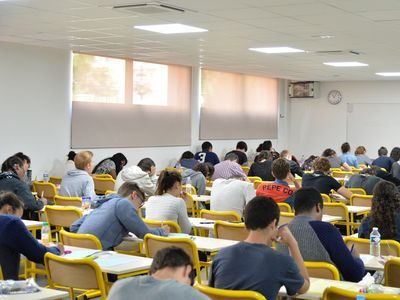
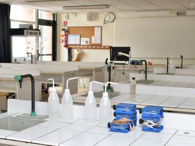

Lycée
le passage au lycée etant important nous nous devons d'accompagner et de guider nos élèves. En effet, l'année de seconde est une année fatidique pour le choix d'orientation et le choix parmi nos multitudes de specialtés est difficile.
Cette harmonie de specialité laisse libre cours au choix de votre enfant (trois disciplines en classe de première puis deux en terminale parmi les trois suivies en première). Ces disciplines bénéficient d'horaires significatifs permettant de proposer des programmes ambitieux et de donner du temps aux élèves pour les apprentissages.
Tout ce processus de formation instruient votre enfant et le prépare a sa future vie profesionnelle afin que celle-ci se passe pour le mieux grace a nos équipes très professionnelles ainsi que tout les moyens que nous mettons en place pour favoriser ce processus.


 Lycée
Collège
Accueil
Lycée
Collège
Accueil